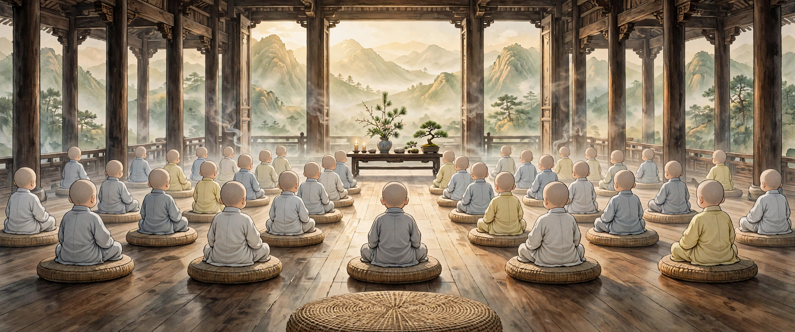
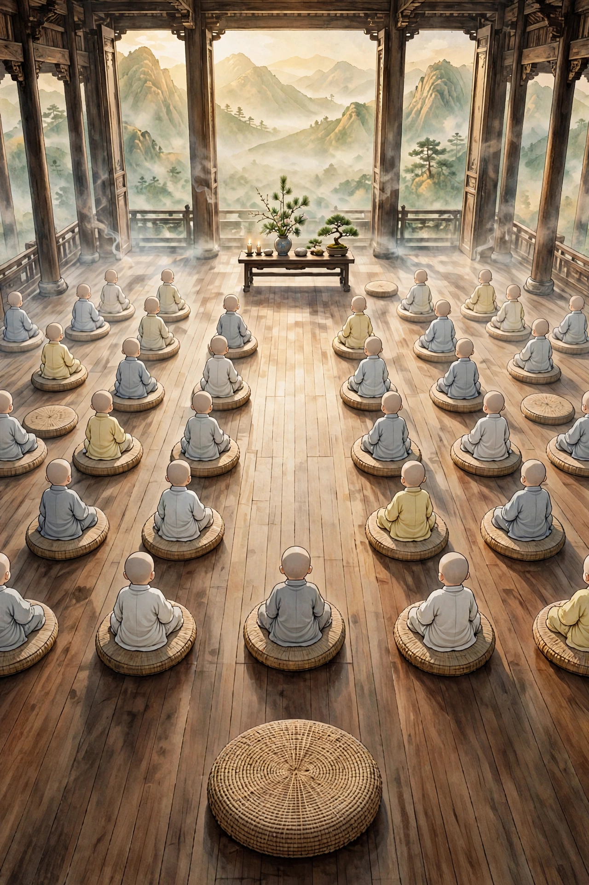
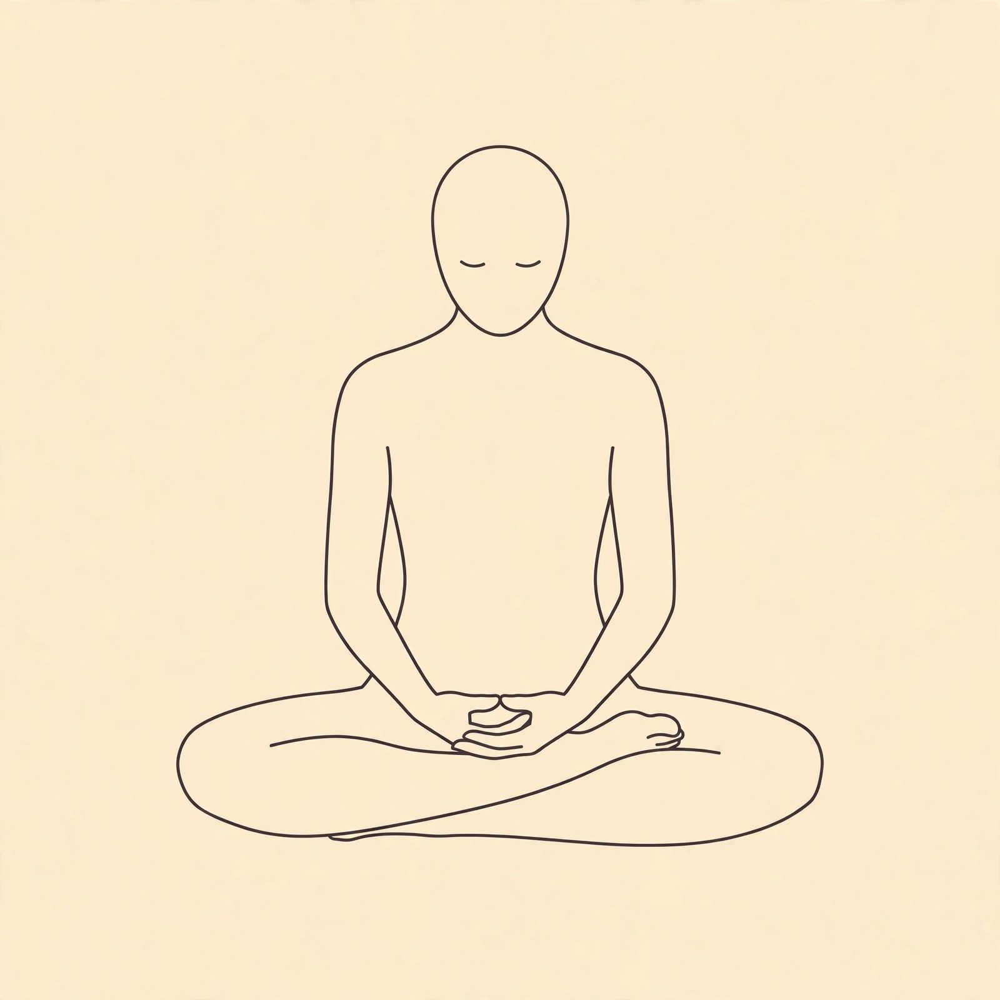

坐下来，给心一点安静。
这是心安禅修堂，每小时整点一场，也可以随时静坐 20 分钟。
深呼吸，不憋气；走神了就回来
选一个蒲团，确认名字，就能坐下。默认无声，想听音乐时再点“开声音”。
可以跟当前整点场、从头开始，或自己坐 20 分钟。压腿量力而行，随时可以跳过或起身。
放松地呼吸，不必追赶圆环，停顿时也不必屏息。名字、座位和灯愿只留在这台设备。

轻点蒲团选席；前景中央是为你留的空位。

0 / 20